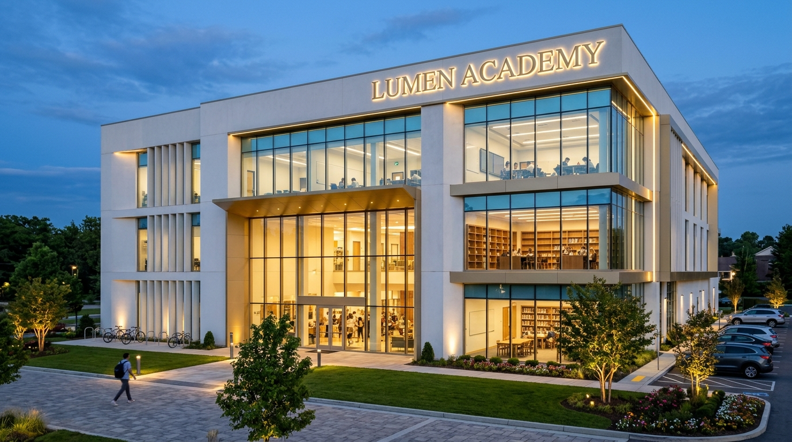
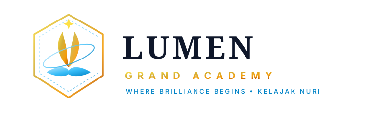
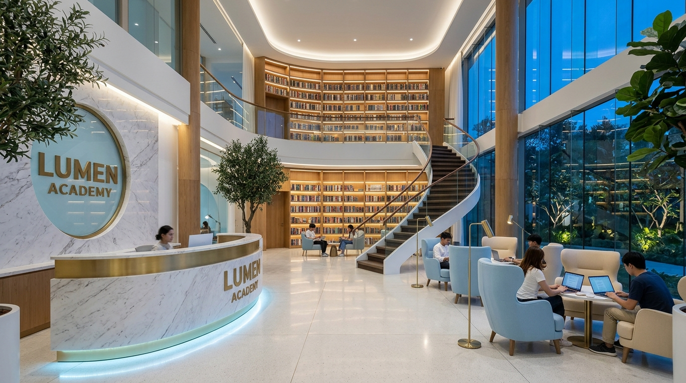
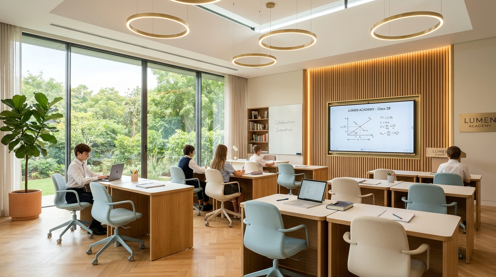

"LUMEN GRAND ACADEMY" — Katta panoramik shisha derazali, hashamatli 2 qavatli kutubxonaga ega, tabiat bag'ridagi 3 qavatli zamonaviy ilm maskani. Oq, och ko'k va oltin ranglarning mukammal uyg'unligi.

Polgacha shisha vitrajlar, oltin nurlanuvchi peshtoq, manzarali daraxtlar, veloturargoh va keng avtomobil parkingi.

* Vektor formatda tayyorlangan — fasad yozuvi, bayroq, kantselyariya va forma uchun mukammal moslashuvchan.
O'quv markazining nomi bir marta eshitilganda yodda qolishi, nufuzli yangrashi va har bir talabada katta ishonch uyg'otishi lozim. "Lumen" — lotin tilidan olingan bo'lib, "Nur", "Yorug'lik" va "Ziyo" ma'nolarini bildiradi.
Oltin mash'al va ochiq kitob uyg'unligi — bilim insonni zulmatdan yorug'likka olib chiquvchi eng buyuk kuch ekanligini ifodalaydi.
Logotipdagi moviy halqa — o'quvchilarimiz nafaqat O'zbekistonda, balki xalqaro maydonda (Harvard, Cambridge, Oksford) nufuzli natijalarga erishishiga yo'llanmadir.
"Kelajagingiz nuri — Lumen bilan charog'on!"
Xalqaro: "Where Brilliance Begins"
Har bir qavat o'ziga xos maqsad, akustika va ergonomikaga ega. O'quvchilar qavatlar orasida charchamay, ilhomlanib harakatlanadilar.
Kirishda Face-ID va turniket tizimi orqali to'liq xavfsizlik va ota-onalarga avtomatik SMS-xabarnoma integratsiyasi mavjud.
Kirishingiz bilan oq Calacatta marmaridan ishlangan, pastki qismi och ko'k LED bilan mayin yoritilgan qabulxona stoli sizni qarshi oladi. Ota-onalar kutishlari uchun yumshoq baxmal kreslolar, doimiy issiq qahva/choy va bolalar uchun qiziqarli kitobli burchaklar mavjud.
Shiftgacha yetuvchi oq va issiq eman daraxtidan javonlar, spiral zinalar va polgacha oynali panoramik derazalar. Kutubxonada shovqinsiz "Silent Focus Pods" (shaxsiy chiroqli o'rindiqlar) hamda jamoaviy muhokama orollari joylashtirilgan.
O'quvchilar dars oralig'ida yangi siqilgan sharbatlar, kapuchino va foydali yeguliklar tanovul qilishlari mumkin bo'lgan yorug' va nafis qahvaxona maydoni.
Ko'pchilik markazlarda faqat tor sinfxonalar bo'ladi. "Lumen Grand Academy"da esa o'quvchilar darsdan keyin ham soatlab qolib ilm olishni istaydigan hashamatli 2 qavatli kutubxona va qabulxona zali barpo etilgan.

Oq marmar reception, och moviy LED yorug'liklar, baland kitob devorlari va yumshoq ergonomik o'rindiqlar.
Ingliz, rus va o'zbek tillarida eng yangi jahon ensiklopediyalari, Oksford darsliklari, matematika va IT qo'llanmalari.
Akustik tovush yutuvchi yumshoq xususiy kabinalar — imtihonga chuqur konsentratsiya bilan tayyorlanish uchun.
Har bir stolda USB-C va 220V portlar, audio-kitoblar va onlayn ma'ruzalarni tinglash uchun planshet stendlari.
Har shanba kutubxonaning markaziy zinasida o'quvchilar va chet ellik ustozlar ishtirokida adabiy debat va qizg'in bahslar.

Biz sinflarni loyihalashda o'quvchining jismoniy va ruhiy qulayligini 1-o'ringa qo'ydik. Hech qanday tor va qorong'u xonalar yo'q — faqat kenglik, toza havo va tabiiy bog' manzarasi!
Dars jarayonida o'quvchining ko'zlari toliqmasligi uchun deraza ortida yam-yashil daraxtlar va gullar ko'rinib turadi.
Oddiy bo'r yoki marker emas — multimediali video darslar, 3D modellar va interaktiv testlar orqali fanlar o'rgatiladi.
Xonalarda doimiy 22°C optimal harorat va toza kislorod aylanadi, bu esa o'quvchining miyasini 100% hushyor saqlaydi.
Har bir kurs xalqaro standartlar asosida ishlab chiqilgan bo'lib, o'quvchilarni real natija va nufuzli sertifikatlarga olib chiqadi.
General English, IELTS 8.5+ intensiv dasturlari, har haftalik xorijlik mehmonlar (Native Speakers) bilan Speaking Clublar.
Erkin so'zlashuv, to'g'ri talaffuz, grammatika va biznes yozishmalar. To'siqlarsiz muloqotga erishish texnikasi.
Prezident maktablari, Al-Xorazmiy olimpiadalari, SAT Math va OTMlarga kirish uchun professional darajadagi tayyorgarlik.
Python, Web va Mobile dasturlash, Sun'iy Intellekt (AI) modellarini o'rgatish, 3D modellashtirish va robototexnika.
Markaz nafaqat kunduzi, balki kechki payt ham shahar ko'rkiga aylanadi. Maxsus 3000K arxitekturaviy yorug'liklar bino va bog'ni ertaknamo muhitga kiritadi.
Bino old qismida doimiy yashil yapon sarvlari, qalin archalar, manzarali lavanda va mavsumiy atirgulzorlar ekilgan. Tabiiy kislorod va toza havoga boy mikroiqlim yaratilgan.
Binoning fasad bo'ylab 3000K issiq oltin LED chiziqlar, daraxtlar tagida yashiringan projektorlar hamda bino peshtoqidagi nurli "LUMEN GRAND ACADEMY" 3D logotipi.
20+ ta velosiped va elektr samokatlar uchun xavfsiz soyabonli zaryadlash stansiyasi hamda ota-onalar va ustozlar uchun 30+ o'rinli avtomatik shlagbaumli parking.
Biz an'anaviy zerikarli darsxonalardan voz kechdik. Har bir tafsilot o'quvchida o'qishga bo'lgan cheksiz ishtiyoqni uyg'otish uchun maxsus yaratilgan.
Oyna devorlar, spiral kutubxona zinasi va zamonaviy neon yozuvlar — o'quvchilar suratga tushib, do'stlari bilan faxrlanib bo'lishadi.
Darsdagi faollik va kitob o'qish uchun raqamli tangalar to'plab, markaz do'konidan xudi, noutbuk sumkasi va kitoblar yutib olish mumkin.
Qattiqqo'llik va zerikarli ma'ruzalar o'rniga — erkin fikrlash, qo'llab-quvvatlovchi mentorlar va samimiy do'stona muhit.
Har juma markaz amfiteatrida xalqaro ilmiy filmlar namoyishi, popkorn va ingliz tilidagi bahs-munozara kechalari o'tkaziladi.
O'quvchi markazga kirgani va chiqqani haqida Face-ID orqali ota-onaga Telegram orqali xabar boradi. To'liq xavfsiz hudud.
Eng iqtidorli o'quvchilarga chet el universitetlariga 100% grant yutish bo'yicha shaxsiy mentorlik xizmati beriladi.
Ushbu konsepsiya to'liq bino rejasi, ranglar kodi, fotorealistik renderlar, mebellar joylashuvi va brending hujjati bilan birgalikda tayyorlandi.